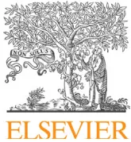

Guidelines
Alain Carioua,*, Jean-Francois Payenb, Karim Asehnounen, Gérard Audiberti, Astrid Botteo, Olivier Brissaudp, Guillaume Debatym, Sandrine Deltours, Nicolas Deyef, Nicolas Engrandj, Gilles Franconya, Stéphane Legrielg, Bruno Levyh, Philippe Meyerq, Jean-Christophe Orbank, Sylvain Renolleaur, Bernard Viguél, Laure de Saint Blanquatd, Cyrille Mathienc, Lionel Vellye, Société de réanimation de langue française (SRLF)the Société française d'anesthésie et de réanimation (SFAR)in conjunction with the Association de neuro-anesthésie réanimation de langue française (ANARLF)the Groupe francophone de réanimation et urgences pédiatriques (GFRUP)the Société française de médecine d'urgence (SFMU)the Société française neuro-vasculaire (SFNV)
a Medical Intensive Care Unit, Cochin University Hospital (AP-HP), Paris Descartes University, 27, rue du Faubourg-Saint-Jacques, 75014 Paris, France
b Pôle anesthésie-réanimation, hôpital Michallon, CHU Grenoble Alpes, 38000 Grenoble, France
c Service de réanimation médicale, centre hospitalier Mulhouse, Mulhouse, France
d Hôpital Necker-Enfants-Malades, réanimation pédiatrique polyvalente, Assistance publique-Hôpitaux de Paris, Paris, France
e Service d'anesthésie-réanimation, hôpital de la Timone, Assistance publique-Hôpitaux de Marseille, Marseille, France
f Hôpital Lariboisière, Assistance publique-Hôpitaux de Paris, Paris, France
g Centre hospitalier de Versailles, Le Chesnay, France
h Hôpital Central, CHU de Nancy, Nancy, France
i CHU de Nancy, Nancy, France
j Fondation Rothschild, Paris, France
k Hôpital Pasteur 2, CHU de Nice, Nice, France
l Anesthésie-réanimation, Bicêtre, France
m CHU de Grenoble, La Tronche, France
n Hôpital Hôtel-Dieu, CHU de Nantes, Nantes, France
o Hôpital Jeanne-de-Flandre, CHRU de Lille, Lille, France
p CHU de Bordeaux, Bordeaux, France
q Hôpital Necker-Enfants-Malades, Assistance publique-Hôpitaux de Paris, Paris, France
r Hôpital Armand-Trousseau, Assistance publique-Hôpitaux de Paris, Paris, France
s Hôpital Pitié-Salpêtrière, Assistance publique-Hôpitaux de Paris, Paris, France
Article history:
Available online xxx
Keywords:
Intensive care unit
Guidelines
Targeted temperature management
Over the recent period, the use of induced hypothermia has gained an increasing interest for critically ill patients, in particular in brain-injured patients. The term “targeted temperature management” (TTM) has now emerged as the most appropriate when referring to interventions used to reach and maintain a specific level temperature for each individual. TTM may be used to prevent fever, to maintain normothermia, or to lower core temperature. This treatment is widely used in intensive care units, mostly as a primary neuroprotective method. Indications are, however, associated with variable levels of evidence based on inhomogeneous or even contradictory literature. Our aim was to conduct a systematic analysis of the published data in order to provide guidelines. We present herein recommendations for the use of TTM in adult and paediatric critically ill patients developed using the Grading of Recommendations Assessment, Development, and Evaluation (GRADE) method. These guidelines were conducted by a group of experts from the French Intensive Care Society (Société de réanimation de langue française [SRLF]) and the French Society of Anesthesia and Intensive Care Medicine (Société française
☆ This article is being published jointly in Anaesthesia Critical Care & Pain Medicine and Annals of Intensive Care. The manuscript validated by the board meeting of SFAR and SRLF (18/02/2016).
* Corresponding author.
E-mail address: alain.cariou@aphp.fr (A. Cariou).
d'anesthésie réanimation [SFAR]) with the participation of the French Emergency Medicine Association (Société française de médecine d'urgence [SFMU]), the French Group for Pediatric Intensive Care and Emergencies (Groupe francophone de réanimation et urgences pédiatriques [GFRUP]), the French National Association of Neuro-Anesthesiology and Critical Care (Association nationale de neuro-anesthésie réanimation française [ANARLF]), and the French Neurovascular Society (Société française neurovasculaire [SFNV]). Fifteen experts and two coordinators agreed to consider questions concerning TTM and its practical implementation in five clinical situations: cardiac arrest, traumatic brain injury, stroke, other brain injuries, and shock. This resulted in 30 recommendations: 3 recommendations were strong (Grade 1), 13 were weak (Grade 2), and 14 were experts' opinions. After two rounds of rating and various amendments, a strong agreement from voting participants was obtained for all 30 (100%) recommendations, which are exposed in the present article.
© 2017 The Author(s). Published by Elsevier Masson SAS on behalf of Société française d'anesthésie et de réanimation (Sfar). This is an open access article under the CC BY license (http://creativecommons.org/licenses/by/4.0/).
D. Fletcher, L. Velly, J. Amour, S. Ausset, G. Chanques, V. Compère, F. Espitalier, M. Garnier, E. Gayat, J.Y. Lefrant, J.M. Malinovsky, B. Rozec, B. Tavernier.
L. Donetti, M. Alves, T. Boulain, O. Brissaud, V. Das, L. de Saint Blanquat, M. Guillot, K. Kuteifan, C. Mathien, V. Peigne, F. Plouvier, D. Schnell, L. Vong.
The protective effects of hypothermia were first studied and described in the late 1950s and then seem to have been forgotten for roughly 20 years before intensivists revived interest in this therapeutic method [1,2]. Experimental data show that the neuroprotective effects of therapeutic hypothermia occur through several mechanisms of action:
Accordingly, the use of mild to moderate hypothermia has gained interest for critically ill patients, in particular brain-injured patients in order to limit the extension of initial brain lesions [11]. This can be achieved through various methods and targeted temperatures. The term “targeted temperature management” (TTM) has emerged as the most appropriate referring to interventions used to reach and maintain a specific level temperature for each individual.
The level of targeted temperature may differ according to the situation. TTM may be used to prevent fever, to maintain normothermia, or to lower core temperature. TTM is widely used in intensive care units (ICUs) as a primary neuroprotective method, i.e. in order to protect against neuronal injury or degeneration in the central nervous system. Its indications are, however, associated
with variable levels of evidence based on inhomogeneous or even contradictory literature. Our aim was to conduct a systematic analysis of the literature in order to edit national guidelines.
These guidelines were conducted by a group of experts for the French Intensive Care Society (Société de réanimation de langue française [SRLF]) and the French Society of Anesthesia and Intensive Care Medicine (Société française d'anesthésie réanimation [SFAR]). The organization committee defined a list of questions to be addressed and designated experts in charge of each question. The questions were formulated using the PICO (Patient Intervention Comparison Outcome) format (http://www.gradeworkinggroup.org/).
The method used to elaborate these recommendations was the GRADE® method [12]. Following a quantitative literature analysis, this method is used to separately determine the quality of available evidence, i.e. estimation of the confidence needed to analyse the effect of the quantitative intervention, and the level of recommendation. The quality of evidence is rated as follows:
The level of recommendation is binary (either positive or negative) and strong or weak:
The strength of the recommendations is determined according to key factors and validated by the experts after a vote, using the Delphi and GRADE Grid method [13] that encompasses the following criteria:
The elaboration of a recommendation requires that at least 50% of voting participants have an opinion and that less than 20% of participants vote for the opposite proposition. The elaboration of a strong agreement requires the agreement of at least 70% of voting participants.
Fifteen experts and two coordinators agreed to consider questions concerning TTM and its practical implementation in five clinical situations in the intensive care setting: cardiac arrest (CA), traumatic brain injury (TBI), stroke, other brain injuries, and shock. The PubMed and Cochrane databases were searched for full articles written in English or French published after January 2005 and June 2015. In case of an absence or a very low number of publications during the considered period, the timing of publications could have been extended to 1995. The paediatric literature had a specific analysis.
The experts summarized the work and applied the GRADE® method, resulting in 30 recommendations: 3 recommendations were strong (Grade 1), 13 were weak (Grade 2), and 14 were expert opinions. After two rounds of rating and various amendments, a strong agreement from voting participants was obtained for all 30 (100%) recommendations.
R1.1 We recommend using TTM in order to improve survival with good neurological outcome in patients resuscitated from out-of-hospital cardiac arrest (OHCA) with shockable cardiac rhythm (ventricular fibrillation and pulseless ventricular tachycardia) and who remain comatose after return of spontaneous circulation (ROSC).
(Grade 1+)
Rationale: Seven meta-analyses [14–20] and 4 systematic reviews [13,21–23] assessed studies on targeted TTM after CA, but none identified separately patients with initial shockable versus non-shockable rhythm. Two studies with patients presenting initial shockable rhythm have been retained in the analysis [24,25] and were in favour of the TTM use in this population. These trials (one pseudo-randomized [24] and one randomized [25]) found improved neurological outcome for OHCA patients with an initial shockable rhythm. Several studies were not included in the present analysis:
Observational studies, before–after studies, and matched cohort studies found results in favour of TTM use, despite a low
to very low level of evidence [18]. International guidelines using the GRADE method and including Bernard [24] and HACA [25] trials strongly recommended the use of TTM for OHCA patients with an initial shockable rhythm to increase survival with good neurological outcome [13]. A recent meta-analysis also supports the use of TTM in this population [14].
R1.2 We suggest considering TTM in order to improve survival with good neurological outcome in patients resuscitated from OHCA with non-shockable cardiac rhythm (asystole or pulseless electrical activity) and who remain comatose after ROSC.
(Grade 2+)
Rationale: Among 8 meta-analyses [14–20,28] and 4 reviews [13,21–23] on TTM after CA, 1 meta-analysis specifically analysed patients with initial non-shockable rhythm [28]. This meta-analysis found decreased hospital mortality in patients with TTM: RR 0.86 (95% CI 0.76–0.99), but there was no difference regarding neurological outcome: RR 0.96 (95% CI 0.90–1.02). One randomized control trial [29] with a limited sample size () compared patients treated with TTM versus no TTM and found no difference between the 2 groups. Most observational studies (low to very low level of evidence) did not observe significant between groups differences. Although some studies were in favour of TTM use in this population [30–32], a majority of studies did not report a clinical improvement by using TTM [33–38]. Based on the poor prognosis in this population and considering the lack of therapeutic alternatives, the experts considered that TTM could be suggested in this population.
R1.3 We suggest considering TTM in order to increase survival with good neurological outcome in patients resuscitated from in-hospital cardiac arrest (IHCA) who remain comatose after ROSC.
(Expert opinion)
Rationale: There are no published randomized controlled trials with patients presenting in-hospital cardiac arrest (IHCA) patients. From 4 studies having included patients with IHCA or OHCA, it was not possible to separately analyse IHCA patients [37,39–41]. In the overall population, the results are either in favour of TTM [31,42] or neutral [34,37,39–41].
R1.4 We suggest considering TTM between 32 and 36 °C in order to improve survival with good neurological outcome after CA.
(Grade 2+)
Rationale: Two studies with a high level of evidence and consistent results addressed this question [14,26]. One randomized controlled trial included 939 patients and found no significant difference in survival and neurological outcome between TTM at 33 °C versus TTM at 36 °C [26]. Similar results were reported in a meta-analysis [14]. This meta-analysis included 6 randomized studies using different degrees of temperature [24–27,29,43] and concluded that a TTM strategy using a targeted temperature < 34 °C might improve outcome compared to a strategy with no TTM. A randomized controlled trial [43] comparing TTM at 32 versus 34 °C was not included in our analysis because this pilot trial included 36 patients only. A retrospective study, not retained in the analysis, found a better outcome at TTM 32–34 °C versus spontaneous normothermia below 37.5 °C [44]. Post-hoc study derived from the TTM trial [26]
was also not included to avoid duplicate data: it was found a possible worsening in outcome in the TTM 33 °C group for patients with shock at hospital admission [45]. Overall, targeted temperatures in clinical studies can be ranged between 32 and 36 °C, although it is not possible to define the optimal temperature within this range.
R1.5 We do not suggest initiating TTM with infusion of large volumes of cold saline solution during transportation to the hospital after CA.
(Grade 2-)
Rationale: Several randomized studies reported that pre-hospital infusion of cold fluids was not associated with improved outcome, whether this administration was conducted during resuscitation (intra-arrest cooling) or after ROSC [46–50]. In one randomized controlled trial [46], pre-hospital infusion of large volumes of cold saline solution (4 °C) was associated with increased occurrence of re-arrest after ROSC and of pulmonary oedema [46]. Alternative methods of pre-hospital cooling were too limited to assess impact on outcome [24,51]. The impact of shortening time to reach TTM during the induction phase of TTM is discussed elsewhere (R6.1). Conversely, any onset of hyperthermia after ROSC appears deleterious in terms of outcome [52,53].
R1.1 Paediatric – In comatose children following resuscitation from OHCA or IHCA with a shockable or a non-shockable cardiac rhythm, we recommend using TTM to maintain normothermia in order to improve neurological outcome.
(Expert opinion)
R1.2 Paediatric – In comatose children following resuscitation from OHCA or IHCA with a shockable or a non-shockable cardiac rhythm, we do not suggest using TTM between 32 and 34 °C to improve survival with good neurological outcome.
(Grade 2-)
Rationale: In a randomized study [54], 270 children (2 days–18 years) with OHCA were compared: 142 children allocated to TTM at 33 °C versus 128 to TTM 36–37.5 °C during 5 days. There was no significant difference between groups in survival rate with good neurological outcome. In this population, hypoxia was the main cause of OHCA (72%), which may explain why these results differed from adults [24,25]. In a recent study, TTM lower than 32 °C was associated with higher mortality rate [55]. Other retrospective or prospective studies had limited population size, and mixed OHCA and IHCA, cardiac and respiratory causes. Although hypothermia was still recommended in 2010 [56,57], the latest recommendations by the International Liaison Committee on Resuscitation (ILCOR) endorsed the latest trials and did not recommend any longer using hypothermia in children who remain comatose after resuscitation CA [58].
R2.1 In patients with severe traumatic brain injury, we suggest considering TTM at 35–37 °C in order to control intracranial pressure.
(Grade 2+)
Rationale: In a case-control series of patients with severe traumatic brain injury (TBI), Puccio et al. [59] showed that patients with TTM maintained at 36–36.5 °C within 72 h of TBI presented a lower averaged intracranial pressure (ICP) and fewer episodes of ICP > 25 mmHg as compared with patients who did not receive TTM. Several series of clinical cases [60–62] showed a correlation between core temperature, brain temperature, and ICP. However, there is no randomized controlled study showing that TTM at 35–37 °C in patients with severe TBI was associated with prevention of intracranial hypertension.
R2.2 In patients with severe traumatic brain injury, we suggest considering TTM at 35–37 °C to improve survival with good neurological outcome.
(Grade 2+)
Rationale: In patients with TBI, hyperthermia is associated with higher mortality rates [63,64], unfavourable neurological outcome [63–66], and prolonged length of stay in the ICU and in the hospital [63,67,68]. A cohort of patients with head injury (65% of TBI) did not show improved neurological outcome in patients who received TTM as compared with historical controls with no TTM [69]. There is yet no randomized controlled study showing that TTM in patients with TBI is associated with improved neurological outcome, reduced mortality rate, or length of hospital stay. Despite the low level of evidence, the aggravated outcome associated with hyperthermia supports the recommendation to maintain TTM between 35 and 37 °C.
Several studies with a higher level of evidence [70–74] and meta-analyses [75–77] in adults and children showed no benefit regarding mortality or neurological outcome with the use of therapeutic hypothermia between 32 and 35 °C, compared to normothermia in patients with severe TBI whether they had intracranial hypertension or not.
R2.3 In TBI patients with refractory intracranial hypertension despite medical treatments, we suggest considering TTM at 34–35 °C in order to lower ICP.
(Grade 2+)
Rationale: Several studies showed that TTM at 34–35 °C could lower ICP [70,75,78–84], while this effect was not confirmed elsewhere [71,72], and a raised in ICP was seen during rewarming [69]. Polderman et al. [85] showed in 136 patients (64 patients receiving barbiturates + hypothermia versus 72 patients receiving barbiturates alone) that therapeutic hypothermia was superior to barbiturates alone to treat high ICP and was associated with a reduced mortality rate. In the Eurotherm trial [86], which is the first randomized, multicentre study in a population of TBI patients with ICP above 20 mmHg, 195 patients were treated with TTM (32–35 °C) versus 192 patients treated with normothermia. High ICP was easier to control in patients of the TTM group (barbiturates were used in 41 control patients versus 20 TTM patients). However, several studies found no additional clinical benefit where lowering temperature below 34 °C. In 22 patients with severe head injury, Shiozaki et al. [87] found that intracranial hypertension persisting at 34 °C was not reduced any further by lowering the temperature up to 31 °C. Using multimodal monitoring, hypothermia below 35 °C showed no benefit regarding brain tissue oxygen tension (PtiO2) or biomarkers of brain metabolism [60], and this strategy has a deleterious effect on these parameters [88]. TTM between 32 and 35 °C to treat high ICP can result in side effects, e.g. respiratory infections, which are proportional to the duration and/or depth of hypothermia [75,76].
The duration of hypothermia should be adapted according to the persistence of intracranial hypertension. In a study of 215 patients with severe TBI, a 5-day duration of hypothermia resulted in better control of ICP and neurological outcome than a 2-day period. In addition, rewarming after 5 days resulted in less rebound effect of ICH than after 2 days [89]. The meta-analysis of McIntyre et al. [90] was in line with these findings.
Sustained elevation of ICP is an independent factor of poor outcome after TBI. Uncontrolled studies indicated that therapeutic hypothermia to treat high ICP could be associated with better outcome [77,78,82,91]. However, the Eurotherm study [86] showed that TTM had a negative effect on neurological outcome at 6 months with an odds ratio of unfavourable outcome after adjustment at 1.53 (1.02–2.30) (); favourable outcome (Glasgow Outcome Scale Extended score 5–8) 26% in the TTM 32–35 group versus 37% for patients in the control group (). It should be noted that ICP was moderately elevated in that trial, i.e. 20–30 mmHg and of short-term duration (5 min), and that therapeutic hypothermia was initiated with cold saline infusion prior to using treatments for high ICP (osmotic therapy).
R2.1 Paediatric – In children with severe traumatic brain injury, we recommend using TTM at normothermia.
(Expert opinion)
R2.2 Paediatric – In children with severe traumatic brain injury, we do not recommend using TTM at 32–34 °C to improve outcome or control intracranial hypertension.
(Grade 1–)
Rationale: A randomized study including 225 patients [70] and another one with 77 patients, which was terminated prematurely because of futility [73], support the conclusion that moderate hypothermia (32–34 °C) provides no benefit in terms of outcome in severely brain-injured children. A post-hoc study by Hutchison et al. [92] showed a higher incidence of low arterial blood pressure and low cerebral perfusion pressure during moderate hypothermia (32–34 °C). A retrospective study in 117 severe TBI children identified early hyperthermia as an independent factor associated with aggravated outcome (OR for lower Glasgow Coma Scale score at PICU discharge: 4.7, CI 1.4–15.6; OR for longer length of stay in PICU: 8.5, CI 2.8–25.6) [93]. TTM may reduce ICP in TBI children as seen in adults.
R3.1 We suggest considering TTM at normothermia during the early phase of severe ischaemic stroke.
(Expert opinion)
Rationale: Hyperthermia or fever is a frequent complication (> 50%) in patients at the acute phase of stroke and is correlated with poor functional outcome [63]. However, the efficacy of therapeutic hypothermia has not yet been shown, according to 6 randomized trials that tested hypothermia (33–35 °C) in stroke patients [94–99]. There were few patients and methodological biases were numerous. A single study [99] investigated patients with severe stroke (NIHSS > 15). Two randomized studies are ongoing: EuroHYP-1 [100] explores the value of 24 h; 34–35 °C
hypothermia following recent stroke, and the recent ICTuS 2/3 trial [101]. In that later study, intravascular therapeutic hypothermia was found safe and feasible in patients treated with recombinant tissue-type plasminogen activator.
Routine use of antipyretics is commonly recommended in patients with hyperthermia, though there is no evidence of their impact on neurological outcome or mortality. The meta-analysis of Ntaios et al. [102] that included 4 major randomized trials [103–106] found no difference in mortality or neurological outcome between hypothermia and hyperthermia (> 38 °C).
R3.2 – In comatose patients with spontaneous intracerebral haemorrhage, we suggest considering TTM at 35–37 °C to lower intracranial pressure.
(Expert opinion)
Rationale: Observational studies showed that fever is indicative of poor neurological outcome after intracerebral haemorrhage [107,108]. However, most of these studies were observational, with a small number of patients and methodological biases. Two observational studies showed that hypothermia at 35 °C over 8–10 days had a favourable effect on peri-haemorrhagic oedema and ICP, with no benefit on neurological outcome [109,110]. A case–control study using TTM at 37 °C found no effect on neurological outcome at ICU discharge, while the duration of mechanical ventilation and length of stay in the ICU was prolonged in patients treated with TTM [111]. The effect of hypothermia at 35 °C during 8 days is ongoing in patients with a large intracerebral haemorrhage (25–64 mL) (CINCH trial) [112].
R3.3 – In comatose patients with aneurysmal subarachnoid haemorrhage, we suggest considering TTM to lower ICP and/or to improve neurological outcome.
(Expert opinion)
Rationale: Observational studies showed that fever is predictive of poor neurological outcome after subarachnoid haemorrhage [113–115]. Most of these studies were observational, with a small number of patients and methodological biases [116–120]. These studies found a decrease in ICP and suggested that the 12-month neurological outcome might be improved with the use of normothermia and hypothermia (32–34 °C) in refractory intracranial hypertension. A randomized controlled study [118] compared normothermia (TTM at 36.5 °C) versus conventional treatment for hyperthermia > 37.9 °C: no conclusion could be drawn for the subgroup of patients with subarachnoid haemorrhage.
R3.1 Paediatric 3.1 Paediatric – In children with subarachnoid haemorrhage, we suggest considering TTM between 36 and 37.5 °C to control intracranial pressure.
(Experts' recommendation)
Rationale: There is no randomized controlled study that explored the use of TTM and therapeutic hypothermia in children with stroke, intracerebral haemorrhage, and/or subarachnoid haemorrhage. Reduction of intracranial pressure was reported in one clinical case [121] and in a retrospective study where fever control and therapeutic hypothermia were used [122]. TTM may reduce ICP in children with SAH as seen in adults.
R4.1 In patients with refractory or super-refractory status epilepticus, we suggest considering TTM at 32–35 °C to control seizure activity.
(Expert opinion)
Rationale: Experimental studies [123–131] showed the anti-convulsant properties of hypothermia that were confirmed in patients with refractory or super-refractory status epilepticus (lasting for more than 24 h) persisting despite maximum treatment. A randomized controlled trial and several reports showed that TTM (32–35 °C) for 24 h was associated with a better control of electrical seizure activity and achievement of burst-suppression pattern [132–134]. In the HYBERNATUS trial, the rate of progression to EEG-confirmed status epilepticus was lower in the hypothermia group than in the control group (11 vs. 22%; odds ratio, 0.40; 95% CI 0.20–0.79; ) [135].
R4.2 In comatose patients with meningitis or meningoencephalitis, we do not suggest considering TTM when fever is tolerated.
(Expert opinion)
Rationale: No interventional study tested the effect of TTM on outcome of ICU patients with meningitis or meningoencephalitis. Saxena et al. [136] showed that peak temperature in the first 24 h of ICU admission did not increase the hospital mortality rate in patients with infection of the central nervous system (CNS), whereas it was associated with increased mortality rate in patients with stroke and TBI. Other studies did not report consistent results [137,138]. Interestingly, in the absence of infection, the outcome was better if the temperature over the first 24 h peaked between 37.5 and 37.9 °C, whereas in case of infection, the outcome was better if temperature peaked at 38–38.4 °C (UK database) or at 39–39.4 °C (NZ/Australian database) [136]. Fever plays a protective role because it inhibits replication of N. meningitidis and S. pneumoniae [136] and eases the diagnosis of infection [137]. The use of paracetamol in septic patients can decrease temperature by 0.3 °C, but did not affect mortality or length of ICU stay [139].
R4.3 In comatose patients with bacterial meningitis and no intracranial hypertension, we suggest considering normothermia to improve survival and neurological outcome.
(Expert opinion)
Rationale: In ICU patients with bacterial meningitis, Mourvillier et al. [140] found more deleterious effects in the induced hypothermia group. No other study has been conducted on this topic.
R4.4 – In comatose patients with bacterial meningitis and intracranial hypertension, we suggest considering TTM at 34–36 °C to improve survival and neurological outcome.
(Expert opinion)
Rationale: In comatose patients with bacterial meningitis and intracranial hypertension, hypothermia had a favourable effect on non-invasive measurements of ICP [141]. However, the control group was historical and 10 patients from a preliminary study were probably included [142]. In a case report [143], TTM at
35–36 °C controlled refractory intracranial hypertension, in combination with thiopental. In two other studies in patients with severe viral encephalitis and intracranial hypertension, outcome was better in cooled patients [144,145]. Similar findings were obtained in other case reports [146–151].
R4.1 Paediatric – In children with status epilepticus, we suggest considering TTM (normothermia) to improve outcome.
(Expert opinion)
Rationale: Few clinical cases of refractory or super-refractory status epilepticus [152–154] and encephalitis in children [152,155] treated with therapeutic hypothermia have been reported. There is a lack of evidence to formalize recommendation. A retrospective study in 43 heterogeneous patients (encephalitis and encephalopathy – viruses, major hyperthermia, shock, status epilepticus) [156] compared 16 patients under normothermia versus 27 patients under therapeutic hypothermia. The cerebral performance category score at 12 months was better in patients under hypothermia. Maintaining normothermia in children with status epilepticus may be appropriate.
R5.1 We do not suggest considering TTM below 36 °C in patients with cardiogenic shock.
(Grade 2–)
Rationale: There were 4 studies that investigated the effects of moderate hypothermia [157–160]. They were retrospective or uncontrolled, and the number of patients included was low. Therapeutic hypothermia is feasible and not associated with an increased incidence of adverse effects. A prospective study is in progress (clinical trial.gov – NCT01890317).
R5.2 We do not suggest considering TTM below 36 °C in patients with septic shock.
(Grade 2–)
R5.3 We suggest considering TTM at normothermia in patients with septic shock.
(Grade 2)
Rationale: Among five randomized trials [161–164], three were designed to evaluate non-steroidal anti-inflammatory drugs versus placebo with a large proportion of patients without fever in the 2 groups [161,162,164]. One study compared acetaminophen versus placebo in patients with fever [139]. These studies showed that antipyretics effectively control temperature with no reported side effects. There was no difference in mortality rate, hemodynamic status, or length of stay in ICU. In one trial that compared TTM versus no TTM, Schortgen et al. [163] found that the vasopressor support (main endpoint) was significantly reduced in the TTM group, as was the duration of shock. However, despite a decreased mortality rate (secondary endpoint) at day 14 observed in the TTM group, there was no difference in mortality rate at both ICU and hospital discharge. TTM improved hemodynamic status in one methodologically well-conducted study [163] in which mortality was a secondary objective. All clinical studies concluded that TTM is feasible in septic shock and is not associated with more frequent side effects.
R6.1 We recommend using advanced methods with servo-regulated cooling of central body temperature to optimize TTM.
(Grade 1+)
Rationale: The present recommendation is based on post-cardiac arrest patients. A greater efficacy of advanced methods (“servo-controlled”) was constantly found, particularly during the maintenance phase. The benefit of advanced methods during the induction phase of TTM was however variable because it relied upon the initial temperature. The incidence of overcooling/overshooting was variable between advanced and basic methods. Our analysis included 3 randomized studies [165–167] and uncontrolled studies [168–171]. Regarding the neurological outcome, results were discordant: one study found a trend in favour of advanced methods [165], two studies were either negative [166] or positive (though cerebral performance category score was not reported) [167], and 4 studies gave variable results [168–171]. Overall, these advanced methods might help to optimize TTM, but their effect on survival with good neurological outcome was not established [40].
R6.2 We suggest considering the control of rewarming in patients treated with TTM.
(Expert opinion)
Rationale: After cardiac arrest, it is impossible to distinguish effects associated with the rewarming period from those attributable to induction and maintenance phase. Experts retained 2 randomized trials [165,166] that found no differences between controlled and passive rewarming. The rate of rewarming and the time to achieve normothermia were found different between controlled and uncontrolled rewarming in non-randomized studies [178–180]. Rebound or post-rewarming fever was not always suppressed using controlled rewarming [165,170–172]. Clinical studies found no association between rewarming rate and outcome after adjustment [165,171–174]. In brain trauma and stroke, a lower rate of rewarming is important in order to prevent rebounds on ICP [89,173,174]. However, no randomized trial has specifically addressed this issue other than indirect measurements of ICP [175].
R6.3 We suggest considering measurements of core body temperature in patients treated with TTM.
(Grade 2+)
Rationale: Besides the brain as the most preferable site to measure core body temperature, other sites can be used. Observational studies assessed the agreement between the core body temperature and other sites, i.e. oesophagus, bladder, rectum, nasopharynx, eardrum, and skin [176–180]. Agreement between core body sites of measurement (lungs, oesophagus, bladder, and rectum) was correct. Correlation and agreement were poor for peripheral sites of measurement (skin and tympanic) [176–180]. A study reported a bias of 1 °C between core and tympanic temperature [178].
R6.4 We suggest considering the detection of several complications (sepsis, pneumonia, arrhythmia, hypokalaemia) in patients treated with TTM.
(Grade 2+)
Rationale: The meta-analysis of Xiao et al. [181] found a trend between the use of TTM and the incidence of infectious complications, i.e. sepsis and pneumonia. Not included in this meta-analysis are observational studies performed in large populations [33,182–184]: they all found an increased incidence of infectious complications in TTM patients. Hypokalaemia is the most common metabolic derangement reported in TTM studies [26]. Two studies reported an increased occurrence of hypokalaemia (serum potassium < 3.5 mmol/L) [37,185] that was confirmed in the meta-analysis of Xiao et al. [181]. This meta-analysis found higher risk of cardiac arrhythmia in patients treated with TTM [181].
R6.1 Paediatric – We suggest considering methods with servo-regulated cooling of central body temperature in children treated with TTM.
(Expert opinion)
Rationale: One randomized open controlled study showed the superiority of a servo-controlled system in maintaining hypothermia in newborns with perinatal asphyxia managed in the pre-hospital settings with therapeutic hypothermia [186]. Forty-nine infants were allocated to a servo-controlled system, and 51 were cooled according to the unit's usual protocol (passive hypothermia). Newborns cooled with the servo-controlled device were more often close to the target temperature upon arrival at the hospital (median 73% [IQR 17–88] vs. 0% [IQR 0–52] ). The target temperature was more often reached during transport in the servo-control group (80 vs. 49%, ) and in a shorter time ( vs. min, ). The number of newborns who reached the target temperature in 1 h was significantly higher in the servo-control group than in the control group (71 vs. 20%, ).
R6.2 Paediatric – We suggest considering measurements of core body temperature measurement in children treated with TTM.
(Grade 2+)
Rationale: Several studies compared the accuracy of different sites for temperature measurement in children. In a prospective study (), peripheral sites (axillary, tympanic, rectal, oesophageal) were compared to central blood measurements [187]. The best agreement with blood temperature was obtained with oesophageal measurements. Several other studies and meta-analysis confirmed a poor agreement between axillary or tympanic measurements and central blood temperature [188–190].
AC and JFP proposed the elaboration of this recommendation and manuscript in agreement with the “Société de réanimation de langue française” and “Société française d'anesthésie et de réanimation”. LSB, CM, and LV wrote the methodology section and gave the final version with the final presentation. ND and GD contributed to elaborate recommendations and write the rationale of question 1 (cardiac arrest). BV, GF, JFP contributed to elaborate recommendations and to write the rationale of question 2 (traumatic brain injury). SD and GA contributed to elaborate recommendations and to write the rationale of question 3 (stroke and subarachnoid haemorrhage). SL and NE contributed to elaborate recommendations and to write the rationale of question 4 (acute bacterial meningitis and status epilepticus). BL and KA contributed to elaborate recommendations and to write the rationale of question
5 (shock). JCO and ND contributed to elaborate recommendations and to write the rationale of question 6 (implementation and monitoring). AB, LSB, PM, and SR contributed to elaborate recommendations and to write the rationale paediatric recommendations. FA and YW provide references. AC, LV, and JFP drafted the manuscript. All authors read and approved the final manuscript.
This work was financially supported by the Société de réanimation de langue française (SRLF) and the Société française d'anesthésie et de réanimation (SFAR).
Alain Cariou declares speaker fees and transport accommodation from Bard.
Nicolas Deye declares speaker fees, transport accommodation, and research grants from BARD and ZOLL.
Nicolas Deye was also the primary investigator of the ICEREA trial (partially granted by ALSIUS) and coordinator of the Cool Study (CSZ-Mediterm).
Karim Asehnoun, Gérard Audibert, Astrid Botte, Olivier Brissaud, Guillaume Debaty, Sandrine Deltour, Nicolas Engrand, Gilles Francony, Bruno Levy, Cyrille Mathien, Philippe Meyer, Jean-Christophe Orban, Jean-François Payen, Sylvain Renolleau, Laure de Saint Blanquat, Lionel Velly, Bernard Vigué declare that they have no competing interest.
[44] Hörburger D, Testori C, Sterz F, Herkner H, Krizanac D, Uray T, et al. Mild therapeutic hypothermia improves outcomes compared with normothermia in cardiac-arrest patients – a retrospective chart review. Crit Care Med 2012;40:2315–9.
[45] Annborn M, Bro-Jeppesen J, Nielsen N, Ullén S, Kjaergaard J, Hassager C, et al. The association of targeted temperature management at 33 and 36 & #xB0;C with outcome in patients with moderate shock on admission after out-of-hospital cardiac arrest: a post hoc analysis of the Target Temperature Management trial. Intensive Care Med 2014;40:1210–9.
[46] Kim F, Nichol G, Maynard C, Hallstrom A, Kudenchuk PJ, Rea T, et al. Effect of prehospital induction of mild hypothermia on survival and neurological status among adults with cardiac arrest: a randomized clinical trial. JAMA 2014;311:45–52.
[47] Debaty G, Maignan M, Savary D, Koch FX, Ruckly S, Durand M, et al. Impact of intra-arrest therapeutic hypothermia in outcomes of prehospital cardiac arrest: a randomized controlled trial. Intensive Care Med 2014;40:1832–42.
[48] Bernard SA, Smith K, Cameron P, Masci K, Taylor DM, Cooper DJ, et al. Induction of prehospital therapeutic hypothermia after resuscitation from nonventricular fibrillation cardiac arrest. Crit Care Med 2012;40:747–53.
[49] Bernard SA, Smith K, Cameron P, Masci K, Taylor DM, Cooper DJ, et al. Induction of therapeutic hypothermia by paramedics after resuscitation from out-of-hospital ventricular fibrillation cardiac arrest: a randomized controlled trial. Circulation 2010;122:737–42.
[50] Kim F, Olsufka M, Longstreth Jr WT, Maynard C, Carlbom D, Deem S, et al. Pilot randomized clinical trial of prehospital induction of mild hypothermia in out-of-hospital cardiac arrest patients with a rapid infusion of 4C normal saline. Circulation 2007;115:3064–70.
[51] Castrén M, Nordberg P, Svensson L, Taccone F, Vincent JL, Desruelles D, et al. Intra-arrest transnasal evaporative cooling: a randomized, prehospital, multicenter study (PRINCE: pre-ROSC IntraNasal Cooling Effectiveness). Circulation 2010;122:729–36.
[52] Suffoletto B, Peberdy MA, van der Hoek T, Callaway C. Body temperature changes are associated with outcomes following in-hospital cardiac arrest and return of spontaneous circulation. Resuscitation 2009;80:1365–70.
[53] Gebhardt K, Guyette FX, Doshi AA, Callaway CW, Rittenberger JC. Post-cardiac arrest service. Prevalence and effect of fever on outcome following resuscitation from cardiac arrest. Resuscitation 2013;84:1062–7.
[54] Moler FW, Silverstein FS, Holubkov R, Slomine BS, Christensen JR, Nadkarni VM, et al. Therapeutic hypothermia after out-of-hospital cardiac arrest in children. N Engl J Med 2015;372:1898–908.
[55] Fink EL, Clark RS, Kochanek PM, Bell MJ, Watson RS. A tertiary care center's experience with therapeutic hypothermia after pediatric cardiac arrest. Pediatr Crit Care Med 2010;11:66–74.
[56] de Caen AR, Kleinman ME, Chameides L, Atkins DL, Berg RA, Berg MD. Part 10: paediatric basic and advanced life support, international consensus on cardiopulmonary resuscitation and emergency cardiovascular care science with treatment recommendations. Resuscitation 2010;2010(81): e213–59.
[57] American Heart Association. 2005 American Heart Association (AHA) Guidelines for Cardiopulmonary Resuscitation (CPR) and Emergency Cardiovascular Care (ECC) of pediatric and neonatal patients: pediatric basic life support. Pediatrics 2006;117:e989–1004.
[58] Maconochie IK, Bingham R, Eich C, López-Herce J, Rodríguez-Núñez A, Rajka T, et al. European Resuscitation Council guidelines for resuscitation 2015. Resuscitation 2015;95:223–48.
[59] Puccio AM, Fischer MR, Jankowitz BT, Yonas H, Darby JM, Okonkwo DO. Induced normothermia attenuates intracranial hypertension and reduces fever burden after severe traumatic brain injury. Neurocrit Care 2009;11:82–7.
[60] Rossi S, Zanier ER, Mauri I, Columbo A, Stocchetti N. Brain temperature, body core temperature, and intracranial pressure in acute cerebral damage. J Neurol Neurosurg Psychiatry 2001;71:448–54.
[61] Tokutomi T, Morimoto K, Miyagi T, Yamaguchi S, Ishikawa K, Shigemori M. Optimal temperature for the management of severe traumatic brain injury: effect of hypothermia on intracranial pressure, systemic and intracranial hemodynamics, and metabolism. Neurosurgery 2003;52:102–11.
[62] Stretti F, Gotti M, Pifferi S, Brandi G, Annoni F, Stocchetti N. Body temperature affects cerebral hemodynamics in acutely brain injured patients: an observational transcranial color-coded duplex sonography study. Crit Care 2014;18:552.
[63] Greer DM, Funk SE, Reaven NL, Ouzounelli M, Uman GC. Impact of fever on outcome in patients with stroke and neurologic injury: a comprehensive meta-analysis. Stroke 2008;39:3029–35.
[64] Li J, Jiang J. Chinese Head Trauma Data Bank. Effect of hyperthermia on the outcome of acute head trauma patients. J Neurotrauma 2012;29:96–100.
[65] Jiang JY, Gao GY, Li WP, Yu MK, Zhu C. Early indicators of prognosis in 846 cases of severe traumatic brain injury. J Neurotrauma 2002;19:869–74.
[66] Bao L, Chen D, Ding L, Ling W, Xu F. Fever burden is an independent predictor for prognosis of traumatic brain injury. PLoS ONE 2014;9:e90956.
[67] Stocchetti N, Rossi S, Zanier ER, Colombo A, Beretta L, Citerio G. Pyrexia in head-injured patients admitted to intensive care. Intensive Care Med 2002;28:1555–62.
[68] Diringer MN, Reaven NL, Funk SE, Uman GC. Elevated body temperature independently contributes to increased length of stay in neurologic intensive care unit patients. Crit Care Med 2004;32:1489–95.
[69] Launey Y, Nessler N, Le Cousin A, Feuillet F, Garlantezec R, Mallédant Y, et al. Effect of a fever control protocol-based strategy on ventilator associated pneumonia in severely brain-injured patients. Crit Care 2014;18:689.
[70] Hutchison JS, Ward RE, Lacroix J, Hébert PC, Barnes MA, Bohn DJ, et al. Hypothermia therapy after traumatic brain injury in children. N Engl J Med 2008;358:2447–56.
[71] Maekawa T, Yamashita S, Nagao S, Hayashi N, Ohashi Y. Brain-Hypothermia Study Group. Prolonged mild therapeutic hypothermia versus fever control with tight hemodynamic monitoring and slow rewarming in patients with severe traumatic brain injury: a randomized controlled trial. J Neurotrauma 2015;32:422–9.
[72] Clifton GL, Valadka A, Zygun D, Coffey CS, Drever P, Fourwinds S, et al. Very early hypothermia induction in patients with severe brain injury (the National Acute Brain Injury Study: hypothermia II): a randomised trial. Lancet Neurol 2011;10:131–9.
[73] Adelson PD, Wisniewski SR, Beca J, Brown SD, Bell M, Muizelaar JP, et al. Comparison of hypothermia and normothermia after severe traumatic brain injury in children (Cool Kids): a phase 3, randomised controlled trial. Lancet Neurol 2013;12:546–53.
[74] Shiozaki T, Hayakata T, Taneda M, Nakajima Y, Hashiguchi N, Fujimi S, et al. A multicenter prospective randomized controlled trial of the efficacy of mild hypothermia for severely head injured patients with low intracranial pressure. Mild Hypothermia Study Group in Japan. J Neurosurg 2001;94:50–4.
[75] Sadaka F, Veremakis C. Therapeutic hypothermia for the management of intracranial hypertension in severe traumatic brain injury: a systematic review. Brain Inj 2012;26:899–908.
[76] Crossley S, Reid J, McLatchie R, Hayton J, Clark C, MacDougall M, et al. A systematic review of therapeutic hypothermia for adult patients following traumatic brain injury. Crit Care 2014;18:R75.
[77] Zhang BF, Wang J, Liu ZW, Zhao YL, Li DD, Huang TQ, et al. Meta-analysis of the efficacy and safety of therapeutic hypothermia in children with acute traumatic brain injury. World Neurosurg 2015;83:567–73.
[78] Jiang J, Yu M, Zhu C. Effect of long-term mild hypothermia therapy in patients with severe traumatic brain injury: 1-year follow-up review of 87 cases. J Neurosurg 2000;93:546–9.
[79] Qiu WS, Liu WG, Shen H, Wang WM, Hang ZL, Zhang Y, et al. Therapeutic effect of mild hypothermia on severe traumatic head injury. Chin J Traumatol 2005;8:27–32.
[80] Qiu W, Shen H, Zhang Y, Wang W, Liu W, Jiang Q, et al. Non-invasive selective brain cooling by head and neck cooling is protective in severe traumatic brain injury. J Clin Neurosci 2006;13:995–1000.
[81] Qiu W, Zhang Y, Sheng H, Zhang J, Wang W, Liu W, et al. Effects of therapeutic mild hypothermia on patients with severe traumatic brain injury after craniotomy. J Crit Care 2007;22:229–35.
[82] Zhao QJ, Zhang XG, Wang LX. Mild hypothermia therapy reduces blood glucose and lactate and improves neurologic outcomes in patients with severe traumatic brain injury. J Crit Care 2011;26:311–5.
[83] Zhi D, Zhang S, Lin X. Study on therapeutic mechanism and clinical effect of mild hypothermia in patients with severe head injury. Surg Neurol 2003;59:381–5.
[84] Shiozaki T, Sugimoto H, Taneda M, Yoshida H, Iwai A, Yoshioka T, et al. Effect of mild hypothermia on uncontrollable intracranial hypertension after severe head injury. J Neurosurg 1993;79:363–8.
[85] Polderman KH, Tjong Tjin Joe R, Peerderman SM, Vandertop WP, Girbes AR. Effects of therapeutic hypothermia on intracranial pressure and outcome in patients with severe head injury. Intensive Care Med 2002;28:1563–73.
[86] Andrews PJ, Sinclair HL, Rodriguez A, Harris BA, Battison CG, Rhodes JK, et al. Hypothermia for intracranial hypertension after traumatic brain injury. N Engl J Med 2015;373:2403–12.
[87] Shiozaki T, Nakajima Y, Taneda M, Tasaki O, Inoue Y, Ikegawa H, et al. Efficacy of moderate hypothermia in patients with severe head injury and intracranial hypertension refractory to mild hypothermia. J Neurosurg 2003;99:47–51.
[88] Gupta AK, Al-Rawi PG, Hutchinson PJ, Kirkpatrick PJ. Effect of hypothermia on brain tissue oxygenation in patients with severe head injury. Br J Anaesth 2002;88:188–92.
[89] Jiang JY, Xu W, Li WP, Gao GY, Bao YH, Liang YM, et al. Effect of long-term mild hypothermia or short-term mild hypothermia on outcome of patients with severe traumatic brain injury. J Cereb Blood Flow Metab 2006;26:771–6.
[90] McIntyre LA, Fergusson DA, Hébert PC, Moher D, Hutchison JS. Prolonged therapeutic hypothermia after traumatic brain injury in adults: a systematic review. JAMA 2003;11(289):2992–9.
[91] Liu YH, Shang ZD, Chen C, Lu N, Liu QF, Liu M, et al. 'Cool and quiet' therapy for malignant hyperthermia following severe traumatic brain injury: a preliminary clinical approach. Exp Ther Med 2015;9:464–8.
[92] Hutchison JS, Frndova H, Lo TY, Guerguerian AM. Hypothermia Pediatric Head Injury Trial Investigators, Canadian Critical Care Trials Group. Impact of hypotension and low cerebral perfusion pressure on outcomes in children treated with hypothermia therapy following severe traumatic brain injury: a post hoc analysis of the Hypothermia Pediatric Head Injury Trial. Dev Neurosci 2010;32:406–12.
[93] Natale JE, Joseph JG, Helfaer MA, Shaffner DH. Early hyperthermia after traumatic brain injury in children: risk factors, influence on length of stay, and effect on short-term neurologic status. Crit Care Med 2000;28:2608–15.
[94] Piironen K, Tiainen M, Mustanoja S, Kaukonen KM, Meretoja A, Tatlisumak T, et al. Mild hypothermia after intravenous thrombolysis in patients with acute stroke: a randomized controlled trial. Stroke 2014;45:486–91.
[95] Bi M, Ma Q, Zhang S, Li J, Zhang Y, Lin L, et al. Local mild hypothermia with thrombolysis for acute ischemic stroke within a 6-h window. Clin Neurol Neurosurg 2011;113:768–73.
[96] De Georgia MA, Krieger DW, Abou-Chebl A, Devlin TG, Jauss M, Davis SM, et al. Cooling for acute ischemic brain damage (COOL AID): a feasibility trial of endovascular cooling. Neurology 2004;63:312–7.
[97] Hemmen TM, Raman R, Gulumka KZ, Meyer BC, Gomes JA, Cruz-Flores S, et al. Intravenous thrombolysis plus hypothermia for acute treatment of ischemic stroke (ICTuS-L): final results. Stroke 2010;41:2265–70.
[98] Ovesen C, Brizzi M, Pott FC, Thorsen-Meyer HC, Karlsson T, Ersson A, et al. Feasibility of endovascular and surface cooling strategies in acute stroke. Acta Neurol Scand 2013;127:399–405.
[99] Els T, Oehm E, Voigt S, Klisch J, Hetzel A, Kassubek J. Safety and therapeutic benefit of hemicraniectomy combined with mild hypothermia in comparison with hemicraniectomy alone in patients with malignant ischemic stroke. Cerebrovasc Dis 2006;21:79–85.
[100] van der Worp HB, Macleod MR, Bath PM, Demotes J, Durand-Zaleski I, Gebhardt B, et al. EuroHYP-1: european multicenter, randomized, phase III clinical trial of therapeutic hypothermia plus best medical treatment versus best medical treatment alone for acute ischemic stroke. Int J Stroke 2014;9:642–5.
[101] Lyden P, Hemmen T, Grotta J, Rapp K, Ernstrom K, Rzesiewicz T, et al. Results of the ICTuS 2 Trial (Intravascular Cooling in the Treatment of Stroke 2). Stroke 2016;47:2888–95.
[102] Ntaios G, Dziedzic T, Michel P, Papavasileiou V, Petersson J, Staykov D, et al. European Stroke Organisation (ESO) guidelines for the management of temperature in patients with acute ischemic stroke. Int J Stroke 2015;10:941–9.
[103] Dippel DW, van Breda EJ, van Gemert HM, van der Worp HB, Meijer RJ, Kappelle LJ, et al. Effect of paracetamol (acetaminophen) on body temperature in acute ischemic stroke: a double-blind, randomized phase II clinical trial. Stroke 2001;32:1607–12.
[104] Dippel DW, van Breda EJ, van der Worp HB, van Gemert HM, Meijer RJ, Kappelle LJ, et al. Effect of paracetamol (acetaminophen) and ibuprofen on body temperature in acute ischemic stroke PISA, a phase II double-blind, randomized, placebo-controlled trial [ISRCTN98608690]. BMC Cardiovasc Disord 2003;3:2.
[105] Kasner SE, Wein T, Piriyawat P, Villar-Cordova CE, Chalela JA, et al. Acetaminophen for altering body temperature in acute stroke: a randomized clinical trial. Stroke 2002;33:130–4.
[106] den Hertog HM, van der Worp HB, van Gemert HM, Algra A, Kappelle LJ, van Gijn J, et al. The Paracetamol (Acetaminophen) In Stroke (PAIS) trial: a multicentre, randomized, placebo-controlled, phase III trial. Lancet Neurol 2009;8:434–40.
[107] Schwarz S, Häfner K, Aschoff A, Schwab S. Incidence and prognostic significance of fever following intracerebral hemorrhage. Neurology 2000;54:354–61.
[108] Leira R, Dávalos A, Silva Y, Gil-Peralta A, Tejada J, Garcia M, et al. Stroke Project. Early neurologic deterioration in intracerebral hemorrhage: predictors and associated factors. Cerebrovascular Diseases Group of the Spanish Neurological Society. Neurology 2004;63:461–7.
[109] Kollmar R, Staykov D, Dörfler A, Schellinger PD, Schwab S, Bardutzky J. Hypothermia reduces perihemorrhagic edema after intracerebral hemorrhage. Stroke 2010;41:1684–9.
[110] Staykov D, Wagner I, Volbers B, Doerfler A, Schwab S, Kollmar R. Mild prolonged hypothermia for large intracerebral hemorrhage. Neurocrit Care 2013;18:178–83.
[111] Lord AS, Karinja S, Lantigua H, Carpenter A, Schmidt JM, Claassen J, et al. Therapeutic temperature modulation for fever after intracerebral hemorrhage. Neurocrit Care 2014;21:200–6.
[112] Kollmar R, Juettler E, Huttner HB, Dörfler A, Staykov D, Kallmuenzer B, et al. Cooling in intracerebral hemorrhage (CINCH) trial: protocol of a randomized German-Austrian clinical trial. Int J Stroke 2012;7:168–72.
[113] Oliveira-Filho J, Ezzeddine MA, Segal AZ, Buonanno FS, Chang Y, Ogilvy CS, et al. Fever in subarachnoid hemorrhage: relationship to vasospasm and outcome. Neurology 2001;56:1299–304.
[114] Wartenberg KE, Schmidt JM, Claassen J, Temes RE, Frontera JA, Ostapovich N, et al. Impact of medical complications on outcome after subarachnoid hemorrhage. Crit Care Med 2006;34:617–23.
[115] Fernandez A, Schmidt JM, Claassen J, Pavlicova M, Huddleston D, Kreiter KT, et al. Fever after subarachnoid hemorrhage: risk factors and impact on outcome. Neurology 2007;68:1013–9.
[116] Gasser S, Khan N, Yonekawa Y, Imhof HG, Keller E. Long-term hypothermia in patients with severe brain edema after poor-grade subarachnoid hemorrhage: feasibility and intensive care complications. J Neurosurg Anesthesiol 2003;15:240–8.
[117] Seule MA, Muroi C, Mink S, Yonekawa Y, Keller E. Therapeutic hypothermia in patients with aneurysmal subarachnoid hemorrhage, refractory intracranial hypertension, or cerebral vasospasm. Neurosurgery 2009;64:86–92.
[118] Broessner G, Beer R, Lackner P, Helbok R, Fischer M, Pfausler B, et al. Prophylactic, endovascularly based, long-term normothermia in ICU patients with severe cerebrovascular disease: bicenter prospective, randomized trial. Stroke 2009;40:e657–65.
[119] Badjatia N, Fernandez L, Schmidt JM, Lee K, Claassen J, Connolly ES, et al. Impact of induced normothermia on outcome after subarachnoid hemorrhage: a case-control study. Neurosurgery 2010;66:696–700.
[120] Karnatovskaia LV, Lee AS, Festic E, Kramer CL, Freeman WD. Effect of prolonged therapeutic hypothermia on intracranial pressure, organ function, and hospital outcomes among patients with aneurysmal subarachnoid hemorrhage. Neurocrit Care 2014;21:451–61.
[121] Inamasu J, Ichikizaki K, Matsumoto S, Nakamura Y, Saito R, Horiguchi T, et al. Mild hypothermia for hemispheric cerebral infarction after evacuation of an acute subdural hematoma in an infant. Childs Nerv Syst 2002;18:175–8.
[122] Fink EL, Kochanek PM, Clark RS, Bell MJ. Fever control and application of hypothermia using intravenous cold saline. Pediatr Crit Care Med 2012;13:80–4.
[123] Liu Z, Gatt A, Mikati M, Holmes GL. Effect of temperature on kainic acid-induced seizures. Brain Res 1993;631:51–8.
[124] Jiang W, Duong TM, de Lanerolle NC. The neuropathology of hyperthermic seizures in the rat. Epilepsia 1999;40:5–19.
[125] Yu L, Zhou Y, Chen W, Wang Y. Mild hypothermia pretreatment protects against pilocarpine-induced status epilepticus and neuronal apoptosis in immature rats. Neuropathology 2011;31:144–51.
[126] Lundgren J, Smith ML, Blennow G, Siesjö BK. Hyperthermia aggravates and hypothermia ameliorates epileptic brain damage. Exp Brain Res 1994;99:43–55.
[127] Wang Y, Liu PP, Li LY, Zhang HM, Li T. Hypothermia reduces brain edema, spontaneous recurrent seizure attack, and learning memory deficits in the kainic acid treated rats. CNS Neurosci Ther 2011;17:271–80.
[128] Zhou YF, Wang Y, Shao XM, Chen L, Wang Y. Effects of hypothermia on brain injury induced by status epilepticus. Front Biosci (Landmark Ed) 2012;17:1882–90.
[129] Maeda T, Hashizume K, Tanaka T. Effect of hypothermia on kainic acid-induced limbic seizures: an electroencephalographic and 14C-deoxyglucose autoradiographic study. Brain Res 1999;818:228–35.
[130] Schmitt FC, Buchheim K, Meierkord H, Holtkamp M. Anticonvulsant properties of hypothermia in experimental status epilepticus. Neurobiol Dis 2006;23:689–96.
[131] Kowski AB, Kanaan H, Schmitt FC, Holtkamp M. Deep hypothermia terminates status epilepticus – an experimental study. Brain Res 2012;1446:119–26.
[132] Corry JJ, Dhar R, Murphy T, Diringer MN. Hypothermia for refractory status epilepticus. Neurocrit Care 2008;9:189–97.
[133] Ren GP, Su YY, Tian F, Zhang YZ, Gao DQ, Liu G, et al. Early hypothermia for refractory status epilepticus. Chin Med J 2015;128:1679–82.
[134] Bennett AE, Hoesch RE, DeWitt LD, Afra P, Ansari SA. Therapeutic hypothermia for status epilepticus: a report, historical perspective, and review. Clin Neurol Neurosurg 2014;126:103–9.
[135] Legriel S, Lemiale V, Schenck M, Chelly J, Laurent V, Daviaud F, et al. Hypothermia for neuroprotection in convulsive status epilepticus. N Engl J Med 2016;375:2457–67.
[136] Saxena M, Young P, Pilcher D, Bailey M, Harrison D, Bellomo R, et al. Early temperature and mortality in critically ill patients with acute neurological diseases: trauma and stroke differ from infection. Intensive Care Med 2015;41:823–32.
[137] Fernandes D, Gonçalves-Pereira J, Janeiro S, Silvestre J, Bento L, Póvoa P. Acute bacterial meningitis in the intensive care unit and risk factors for adverse clinical outcomes: retrospective study. J Crit Care 2014;29:347–50.
[138] de Jonge RC, van Furth AM, Wassenaar M, Gemke RJ, Terwee CB. Predicting sequelae and death after bacterial meningitis in childhood: a systematic review of prognostic studies. BMC Infect Dis 2010;10:232.
[139] Young P, Saxena M, Bellomo R, Freebairn R, Hammond N, van Haren F, et al. Acetaminophen for fever in critically ill patients with suspected infection. N Engl J Med 2015;373:2215–24.
[140] Mourvillier B, Tubach F, van de Beek D, Garot D, Pichon N, Georges H, et al. Induced hypothermia in severe bacterial meningitis: a randomized clinical trial. JAMA 2013;310:2174–83.
[141] Kutleša M, Lepur D, Baršić B. Therapeutic hypothermia for adult community-acquired bacterial meningitis-historical control study. Clin Neurol Neurosurg 2014;123:181–6.
[142] Lepur D, Kutleša M, Baršić B. Induced hypothermia in adult community-acquired bacterial meningitis – more than just a possibility? J Infect 2011;62:172–7.
[143] Cuthbertson BH, Dickson R, Mackenzie A. Intracranial pressure measurement, induced hypothermia and barbiturate coma in meningitis associated with intractable raised intracranial pressure. Anaesthesia 2004;59:908–11.
[144] Kutleša M, Baršić B. Therapeutic hypothermia for severe adult Herpes simplex virus encephalitis. Wien Klin Wochenschr 2012;124:855–8.
[145] Kutleša M, Baršić B, Lepur D. Therapeutic hypothermia for adult viral meningoencephalitis. Neurocrit Care 2011;15:151–5.
[146] Wagner I, Staykov D, Volbers B, Kloska S, Dörfler A, Schwab S, et al. Therapeutic hypothermia for space-occupying Herpes simplex virus encephalitis. Minerva Anestesiol 2011;77:371–4.
[147] Munakata M, Kato R, Yokoyama H, Haginoya K, Tanaka Y, Kayaba J, et al. Combined therapy with hypothermia and anticytokine agents in influenza A encephalopathy. Brain Dev 2000;22:373–7.
[148] Sakurai T, Kimura A, Tanaka Y, Hozumi I, Ogura S, Inuzuka T. [Case of adult influenza type A virus-associated encephalopathy successfully treated with primary multidisciplinary treatments]. Rinsho Shinkeigaku 2007; 47:639–43.
[149] Fujita N, Saito H, Sekihara Y, Nagai H. Successful use of mild hypothermia therapy in an adult patient of non-herpetic acute encephalitis with severe intracranial hypertension. No To Shinkei 2003;55:407–11.
[150] Ohtsuki N, Kimura S, Nezu A, Aihara Y. Effects of mild hypothermia and steroid pulse combination therapy on acute encephalopathy associated with influenza virus infection: report of two cases. No To Hattatsu 2000; 32:318–22.
[151] Yokota S, Imagawa T, Miyamae T, Ito S, Nakajima S, Nezu A, et al. Hypothetical pathophysiology of acute encephalopathy and encephalitis related to influenza virus infection and hypothermia therapy. Pediatr Int 2000;42:197–203.
[152] Guilliams K, Rosen M, Buttram S, Zempel J, Pineda J, Miller B, et al. Hypothermia for pediatric refractory status epilepticus. Epilepsia 2013;54: 1586–94.
[153] Shein SL, Reynolds TQ, Gedela S, Kochanek PM, Bell MJ. Therapeutic hypothermia for refractory status epilepticus in a child with malignant migrating partial seizures of infancy and SCN1A mutation: a case report. Ther Hypothermia Temp Manag 2012;2:144–9.
[154] Lin JJ, Lin KL, Hsia SH, Wang HS, Study Group CHEESE. Therapeutic hypothermia for febrile infection-related epilepsy syndrome in two patients. Pediatr Neurol 2012;4:448–50.
[155] Vargas WS, Merchant S, Solomon G. Favorable outcomes in acute necrotizing encephalopathy in a child treated with hypothermia. Pediatr Neurol 2012;46:387–9.
[156] Kawano G, Iwata O, Iwata S, Kawano K, Obu K, Kuki I, et al. Research Network for Acute Encephalopathy in Childhood. Determinants of outcomes following acute child encephalopathy and encephalitis: pivotal effect of early and delayed cooling. Arch Dis Child 2011;96:936–41.
[157] Zobel C, Adler C, Kranz A, Seck C, Pfister R, Hellmich M, et al. Mild therapeutic hypothermia in cardiogenic shock syndrome. Crit Care Med 2012;40: 1715–23.
[158] Hovdenes J, Laake JH, Aaberge L, Haugaa H, Bugge JF. Therapeutic hypothermia after out-of-hospital cardiac arrest: experiences with patients treated with percutaneous coronary intervention and cardiogenic shock. Acta Anaesthesiol Scand 2007;51:137–42.
[159] Schmidt-Schweda S, Ohler A, Post H, Pieske B. Moderate hypothermia for severe cardiogenic shock (COOL Shock Study I & II). Resuscitation 2013;84:319–25.
[160] Skulec R, Kovarnik T, Dostalova G, Kolar J, Linhart A. Induction of mild hypothermia in cardiac arrest survivors presenting with cardiogenic shock syndrome. Acta Anaesthesiol Scand 2008;52:188–94.
[161] Haupt MT, Jastremski MS, Clemmer TP, Metz CA, Goris GB. Effect of ibuprofen in patients with severe sepsis: a randomized, double blind, multicenter study. The Ibuprofen Study Group. Crit Care Med 1991;19:1339–47.
[162] Morris PE, Promes JT, Guntupalli KK, Wright PE, Arons MM. A multicenter, randomized, double-blind, parallel, placebo-controlled trial to evaluate the efficacy, safety, and pharmacokinetics of intravenous ibuprofen for the treatment of fever in critically ill and non-critically ill adults. Crit Care 2010;14:R125.
[163] Schortgen F, Clabault K, Katsahian S, Devaquet J, Mercat A, Deye N, et al. Fever control using external cooling in septic shock: a randomized controlled trial. Am J Respir Crit Care Med 2012;185:1088–95.
[164] Bernard GR, Wheeler AP, Russell JA, Schein R, Summer WR, Steinberg KP, et al. The effects of ibuprofen on the physiology and survival of patients with sepsis. The Ibuprofen in Sepsis Study Group. N Engl J Med 1997;336:912–8.
[165] Deye N, Cariou A, Girardie P, Pichon N, Megarbane B, Midez P, et al. Clinical and Economical Impact of Endovascular Cooling in the Management of Cardiac Arrest (ICEREA) Study Group. Endovascular versus external targeted temperature management for patients with out-of-hospital cardiac arrest: a randomized, controlled study. Circulation 2015;132:182–93.
[166] Rana M, Schröder JW, Saygili E, Hameed U, Benke D, Hoffmann R, et al. Comparative evaluation of the usability of 2 different methods to perform mild hypothermia in patients with out-of-hospital cardiac arrest. Int J Cardiol 2011;152:321–6.
[167] Hoedemaekers CW, Ezzahti M, Gerritsen A, van der Hoeven JG. Comparison of cooling methods to induce and maintain normo- and hypothermia in intensive care unit patients: a prospective intervention study. Crit Care 2007;11:R91.
[168] Feuchtl A, Gockel B, Lawrenz T, Bartelsmeier M, Stellbrink C. Endovascular cooling improves neurological short-term outcome after prehospital cardiac arrest. Intensivmed Notfallmedizin 2007;44:37–42.
[169] Flemming K, Simonis G, Ziegs E, Diewok C, Gildemeister R, Wunderlich C, et al. Comparison of external and intravascular cooling to induce hypothermia in patients after CPR. Ger Med Sci 2006;4:Doc04.
[170] Ferreira I, Schutte M, Oosterloo E, Dekker W, Mooi BW, Dambrink JH, et al. Therapeutic mild hypothermia improves outcome after out-of-hospital cardiac arrest. Neth Heart J 2009;17:378–84.
[171] Gillies MA, Pratt R, Whiteley C, Borg J, Beale RJ, Tibby SM. Therapeutic hypothermia after cardiac arrest: a retrospective comparison of surface and endovascular cooling techniques. Resuscitation 2010;8:1117–22.
[172] Bouwes A, Robillard LB, Binnekade JM, de Pont AC, Wieske L, Hartog AW, et al. The influence of rewarming after therapeutic hypothermia on outcome after cardiac arrest. Resuscitation 2012;83:996–1000.
[173] Schwab S, Georgiadis D, Berrouscho J, Schellinger PD, Graffagnino C, Mayer SA. Feasibility and safety of moderate hypothermia after massive hemispheric infarction. Stroke 2001;32:2033–5.
[174] Povlishock JT, Wei EP. Posthypothermic rewarming considerations following traumatic brain injury. J Neurotrauma 2009;26:333–40.
[175] Lavinio A, Timofeev I, Nortje J, Outtrim J, Smielewski P, Gupta A, et al. Cerebrovascular reactivity during hypothermia and rewarming. Br J Anaesth 2007;99:237–44.
[176] Moran JL, Peter JV, Solomon PJ, Grealy B, Smith T, Ashforth W, et al. Tympanic temperature measurements: are they reliable in the critically ill? A clinical study of measures of agreement. Crit Care Med 2007;35:155–64.
[177] Lefrant JY, Muller L, de La Coussaye JE, Benbabaali M, Lebris C, Zeitoun N, et al. Temperature measurement in intensive care patients: comparison of urinary bladder, oesophageal, rectal, axillary, and inguinal methods versus pulmonary artery core method. Intensive Care Med 2003;29:414–8.
[178] Shin J, Kim J, Song K, Kwak Y. Core temperature measurement in therapeutic hypothermia according to different phases: comparison of bladder, rectal, and tympanic versus pulmonary artery methods. Resuscitation 2013; 84:810–7.
[179] Krizanac D, Stratil P, Hoerburger D, Testori C, Wallmueller C, Schober A, et al. Femoro-iliac artery versus pulmonary artery core temperature measurement during therapeutic hypothermia: an observational study. Resuscitation 2013;84:805–9.
[180] Knapik P, Rychlik W, Duda D, Gołyszny R, Borowik D, Cieśla D. Relationship between blood, nasopharyngeal and urinary bladder temperature during intravascular cooling for therapeutic hypothermia after cardiac arrest. Resuscitation 2012;83:208–12.
[181] Xiao G, Guo Q, Shu M, Xie X, Deng J, Zhu Y, et al. Safety profile and outcome of mild therapeutic hypothermia in patients following cardiac arrest: systematic review and meta-analysis. Emerg Med J 2013;30:91–100.
[182] Nielsen N, Hovdenes J, Nilsson F, Robertsson S, Stammet P, Sunde K, et al. Outcome, timing and adverse events in therapeutic hypothermia after out-of-hospital cardiac arrest. Acta Anaesthesiol Scand 2009;53:926–34.
[183] Mongardon N, Perbet S, Lemiale V, Dumas F, Poupet H, Charpentier J, et al. Infectious complications in out-of-hospital cardiac arrest patients in the therapeutic hypothermia era. Crit Care Med 2011;39:1359–64.
[184] Perbet S, Mongardon N, Dumas F, Bruel C, Lemiale V, Mourvillier B, et al. Early-onset pneumonia after cardiac arrest: characteristics, risk factors and influence on prognosis. Am J Respir Crit Care Med 2011;184:1048–54.
[185] Busch M, Soreide E, Lossius HM, Lexow K, Dickstein K. Rapid implementation of therapeutic hypothermia in comatose out-of-hospital cardiac arrest survivors. Acta Anaesthesiol Scand 2006;50:1277–83.
[186] Akula VP, Joe P, Thusu K, Davis AS, Tamaresis JS, Kim S, et al. A randomized clinical trial of therapeutic hypothermia mode during transport for neonatal encephalopathy. J Pediatr 2015;166:856–61.
[187] Robinson JL, Seal RF, Spady DW, Joffres MR. Comparison of esophageal, rectal, axillary, bladder, tympanic, and pulmonary artery temperatures in children. J Pediatr 1998;133:553–6.
[188] Craig JV, Lancaster GA, Williamson PR, Smyth RL. Temperature measured at the axilla compared with rectum in children and young people: systematic review. BMJ 2000;320:1174–8.
[189] Craig JV, Lancaster GA, Taylor S, Williamson PR, Smyth RL. Infrared ear thermometry compared with rectal thermometry in children: a systematic review. Lancet 2002;360:603–9.
[190] Romano MJ, Fortenberry JD, Autrey E, Harris S, Heyroth T, Parmeter P, et al. Infrared tympanic thermometry in the pediatric intensive care unit. Crit Care Med 1993;21:1181–5.